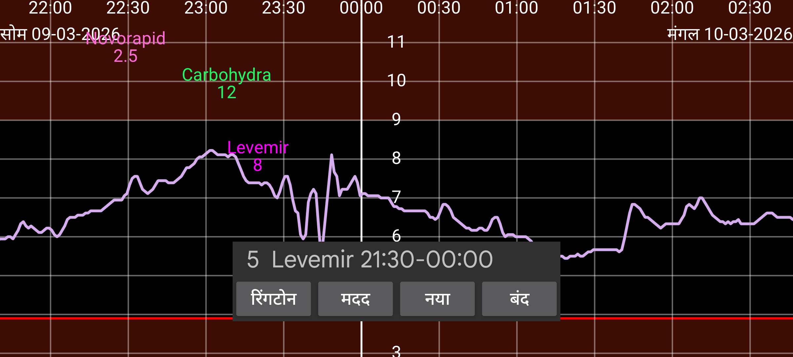

ar be de es fr hi it ja ko nl pl pt ru tr uk uz zh en
अनुस्मारक आपको याद दिलाते हैं यदि आपने एक निश्चित समय अंतराल के भीतर एक निश्चित मात्रा दर्ज नहीं की है।
नया दबाकर आप एक नया अनुस्मारक जोड़ सकते हैं।
समय अवधि का आरंभ और अंत समय निर्दिष्ट करें, जिसके भीतर आपको निर्दिष्ट लेबल के तहत निर्दिष्ट मात्रा दर्ज करनी चाहिए।
यदि अंत समय पहुंचता है तो प्रोग्राम जांच करता है कि क्या आपने आरंभ समय के बाद निर्दिष्ट लेबल के साथ कम से कम यह मात्रा दर्ज की है। यदि आपने पंजीकरण नहीं किया, तो एक सूचना दिखाई जाती है और एक रिंगटोन बजाई जाती है।
उदाहरण के लिए यदि आप निर्दिष्ट करते हैं:
Levemir 6.0
21:30 - 23:55
आपको 23:55 के बाद याद दिलाया जाएगा यदि आपने उसी दिन 21:30 के बाद Levemir की कम से कम 6 इकाइयाँ निर्दिष्ट नहीं कीं।
पहले से निर्दिष्ट अनुस्मारक एक सूची में दिखाए जाते हैं। संपादित करने के लिए छुएं।
यदि सब कुछ ठीक से चलता है, तो अनुस्मारक Android के रीबूट के बाद भी उपयोगकर्ता द्वारा Juggluco शुरू किए बिना काम करते हैं।
कुछ Huawei डिवाइसों पर, आपको निर्दिष्ट करना होगा कि आप एक प्रोग्राम को बूट पर शुरू होने की अनुमति देते हैं। यह Android सेटिंग्स -> बैटरी -> App launch के तहत किया जाता है। यहाँ आप Juggluco के लिए Manually managed चुनते हैं ताकि Auto-Launch और Run in Background चालू हों। यह सिग्नल हानि अलार्म के लिए भी आवश्यक है कि वे उपयोगकर्ता द्वारा Juggluco शुरू किए बिना रीबूट के बाद काम करें।